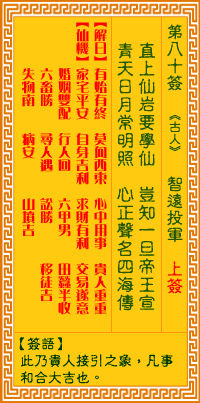

观音灵签第八十签 【智远投军】 |
 | |||
直上高山去学仙 岂知一旦帝王宣 青天白日常明照 志在声名四海传 |
||||
| 【吉凶】 | 上上签 | 【宫位】 | 未宫 | |
| 【签语】 | 此卦贵人接引之象，凡事和合大吉也。 | |||
| 【解曰】 | 有始有终 莫向西东 心中用事 贵人重重 | |||
| 【仙机】 | 此签家宅平安，自身吉利，求财有利，交易遂意，婚姻双配，行人回，六甲男，田蚕半收，六畜胜，寻人遇，讼胜，移徙吉，失物南，病 安，山坟吉。 | |||
| 【详解】 | 本欲上高山学习仙术，谁知一日忽被帝王宣召;本身端正无私就好似红日当空，心中的抱负想必也能一举皆知，名扬四海了啊。 有始有终，大问西东，心中用事，贵人重重。此签贵人性情之象，凡事遇贵全吉。 本签示之于弟子曰。贵人性情之象也。凡百事遇贵人即化凶趋吉者。由诗意得知君尔直上高山去学仙。岂知一旦帝王宣。即青天白日常明照。晴天无一片云。白日 常照时。君之命运。正如当中。易言之。有始有终大问西东心中用事贵人重重。 此签有”身先士卒”之意。鼓励当事人，凡事无私奉献。现在的社会，人与人的相处越来越冷漠。随着诈骗案件的层出不穷，大部份的人都只想求自保的心态下， 很多情况，都不愿意再伸出援手。但是还有另一种人，只想着如果对事情能有所帮助、就会尽量去做，不计较利益得失，当然更不会想到自己。这类的人以投入义 工居多，堪称是人间的活菩萨。须知个人的力量虽然单薄，但只要愿意去做、把被动的想法化为主动而积极的行动，凡事身先士卒、不问一己之私、不在乎能不能 得到回报，相信一定会为自己的内心带来难以言喻的真正快乐。 | |||
| 【典故】 | 刘智远（知远），沙陀族人，出身贫穷，在患难中和李三娘结为夫妇，住在李家庄，因不堪二舅的欺凌，出外从军，投于岳勋处为部将， 终以战功，官九州安抚使。后又投靠石敬溏。公元九四七年在晋阳自立为皇帝。史称后汉高祖，只有二傅。《白兔记》故事 | |||